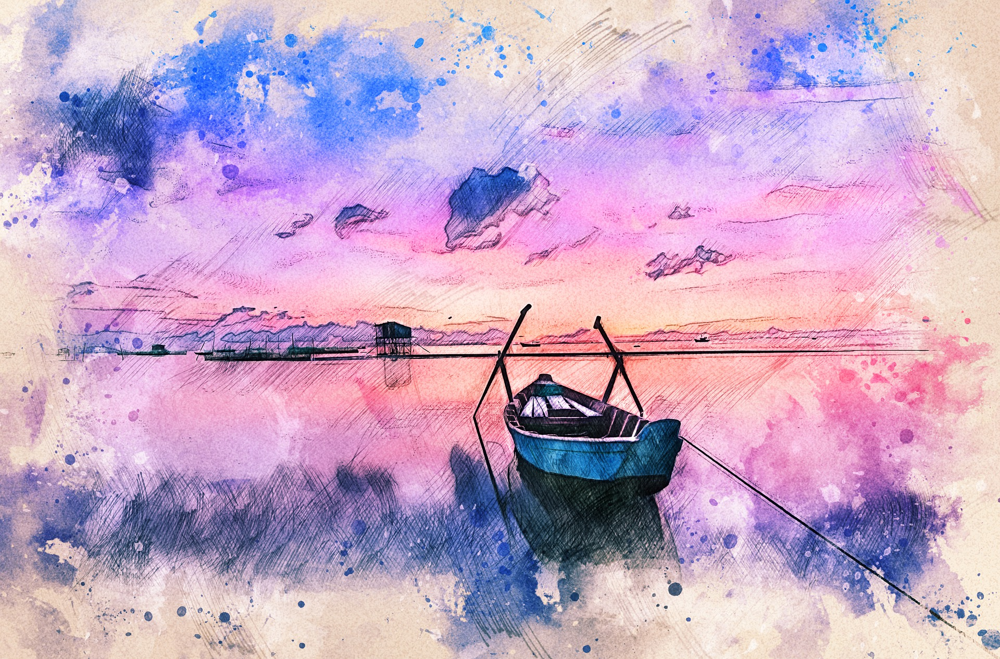
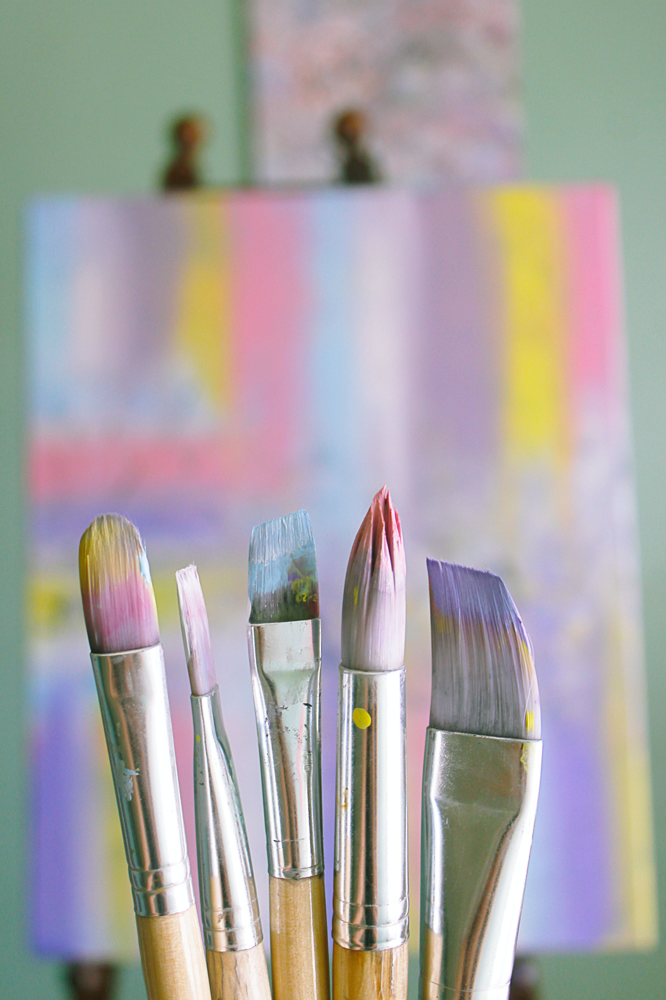
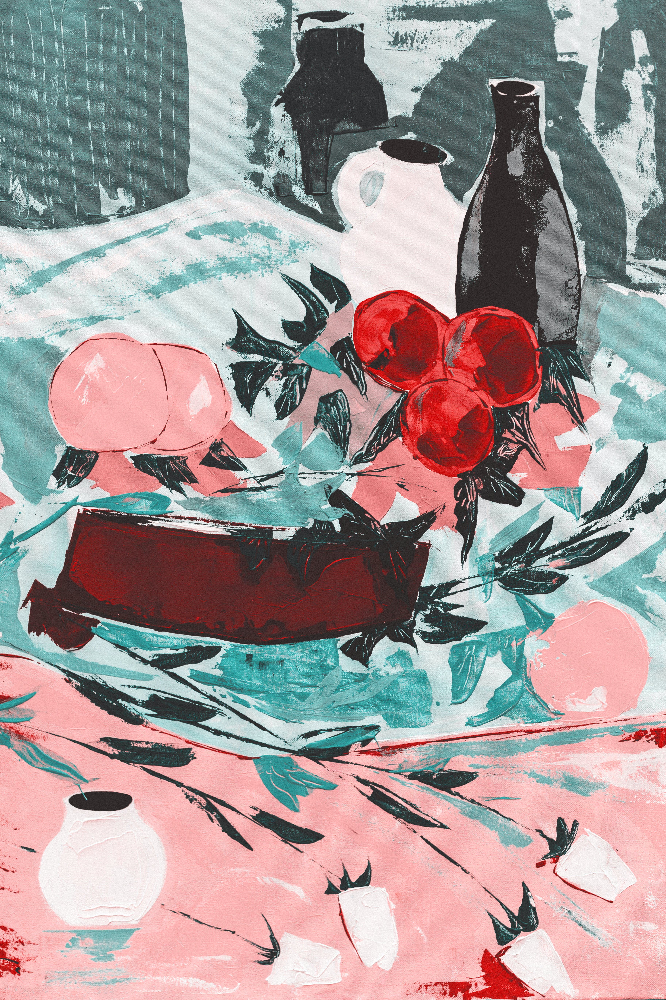
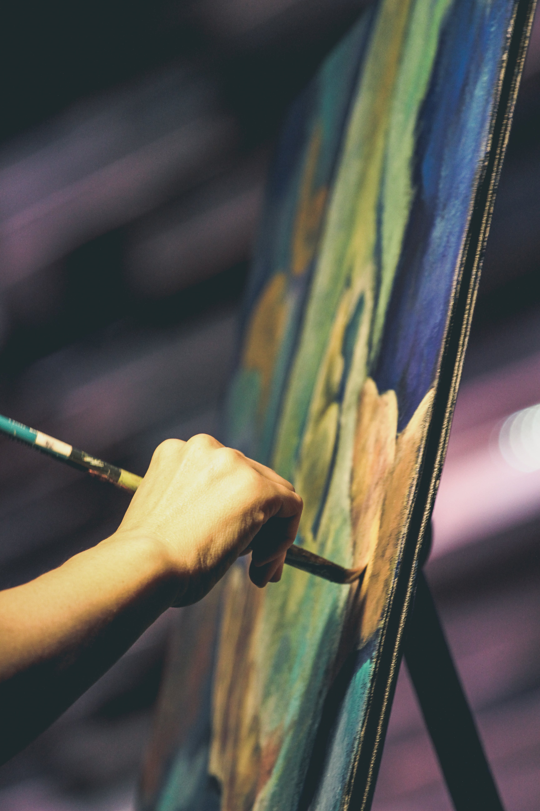
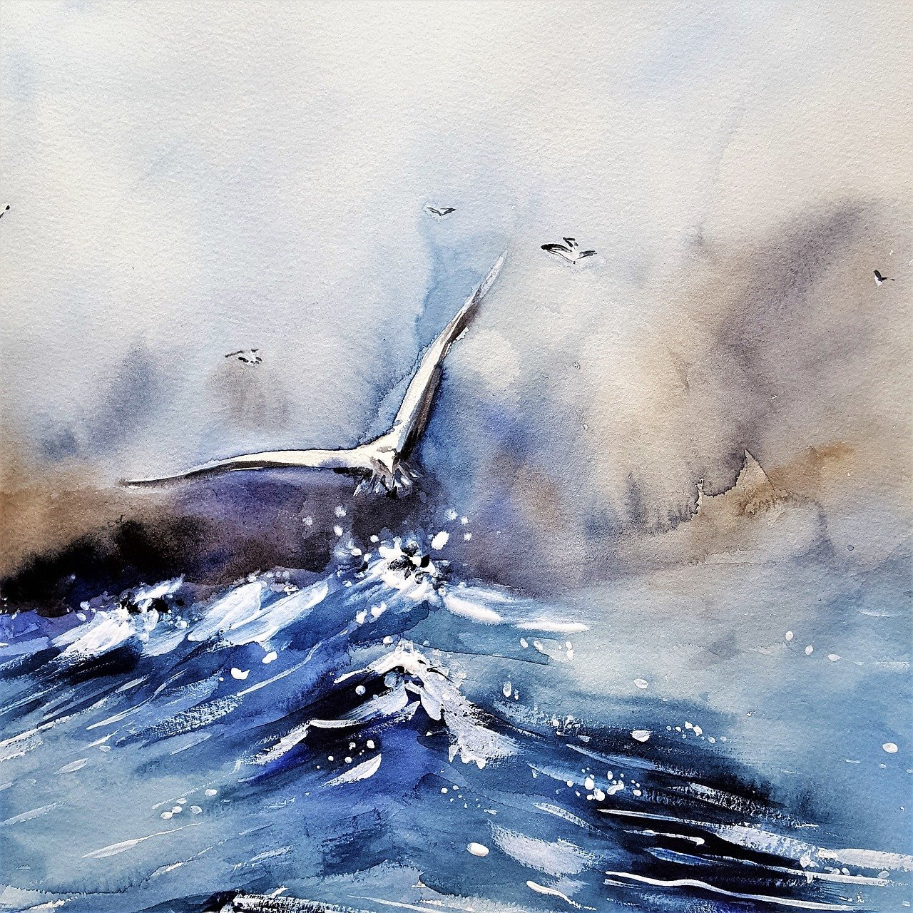
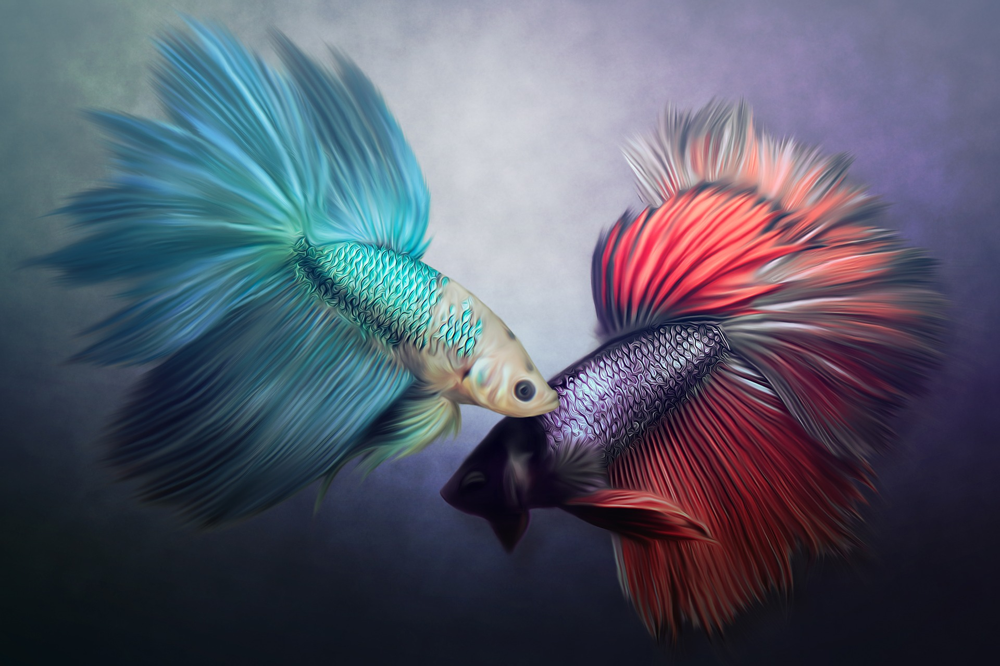
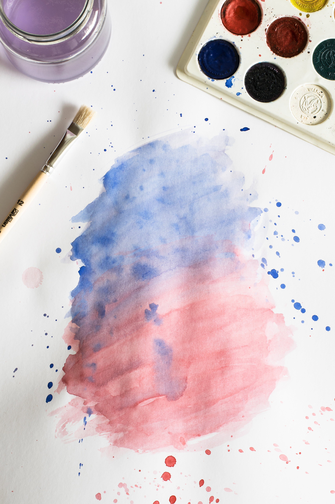
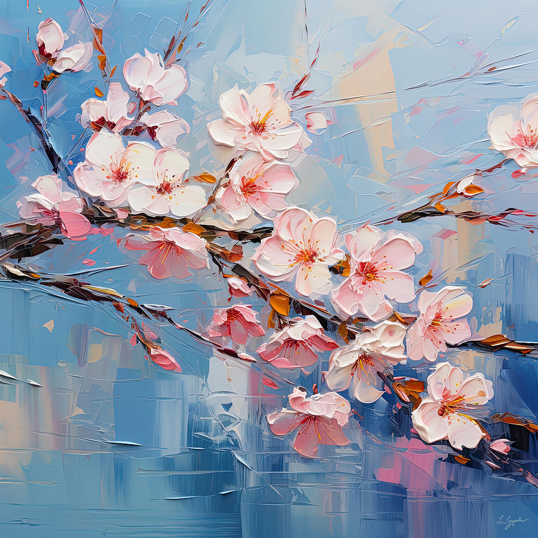

Hajnali kikötő
Olaj, 80 × 60 cm
60 000 Ft
Az olajfestés a reneszánsz óta a legnépszerűbb festészeti technika: a festékanyag száradó olajban oszlik el, így mély, telt színeket és lágy átmeneteket ad.
A Baranya Vármegyei SZC Radnóti Miklós Közgazdasági Technikum végzős diákjai vagyunk. Záródolgozatunk témájául választottuk egy online piacfelület fejlesztését a társammal. A Festményvilág egy piactér, mely összehozza a műkedvelőket és a művészeket. A művészek feltölthetik alkotásaikat, az érdeklődők pedig többféle technikával készült festményekből és rajzokból válogathatnak, valamint egyedi megrendelés leadására is lehetőségük van fotó alapján.



Olajfestmények kézműves papíron, keretezett, csillogásmentes üveg mögött.
Teljesen fedő, gyorsan száradó, száradás után vízálló, vizes alapú festék.
Értéke a finom, világos, áttetsző színekben van. Gyors, tovatűnő jelenségek rögzítésére kiváló.
A festékszemcsék kötőanyag nélkül, kizárólag a felület érdessége révén tapadnak meg.
A világos és sötét közötti tónusértékek széles skálája, Ideális realisztikus portrékhoz.
Sokoldalú médium vázlatkészítéshez és részletes műalkotások létrehozásához.
Viasz, vagy olaj bázisú anyag, és tartalmaz színezékeket, adalékokat és kötőanyagokat.



